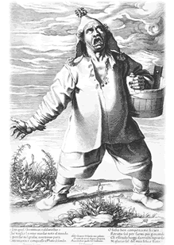

|
With over 150
examples from the Museum's unrivalled collections and a number of
important loans, The Print in Italy
will be the first exhibition to present a broad and representative
survey of printmaking activity during this period. It
will explore how and why Italy became such a dynamic centre for
print production through the activities of domestic and international
practitioners of the calibre of Giorgio
Ghisi, Federico Barocci, Annibale and Agostino Carracci, Cornelis
Cort, Aegidius Sadeler and Francesco
Villamena.
The extraordinary
growth of printmaking in early modern Italy had a huge impact on
the history of European art and on the exchange of images and ideas
in western culture generally. The period between 1550 and 1620 saw
the emergence of large-scale commercial print publishing in Italy
for the first time and a prodigious increase in the quantities of
prints being produced.
From the most
exquisitely rendered mythological and devotional images, which were
the artistic match for any painted equivalent and as eagerly collected,
to maps, allegories, erotica, records of antiquities, and 'low-life'
depictions of street brawls and the tradesmen and artisans who crowded
Italy's urban centres, the range of subjects and ideas represented
in prints of this period was enormous. Sold at fairs and festivals,
pasted on tavern walls, collected in albums, displayed outside print
shops and framed in people's homes, printed imagery became increasingly
visible to every rank of Italian society and central to the way
its members pictured the world and their place in it.
A
fully-illustrated catalogue, The Print in Italy 1550-1620
by Michael Bury, with biographies of around 100 people in the print
trade, accompanies the exhibition.
This exhibition
is organised by the Department of Prints
and Drawings
|

Francesco
Villamena (c.1565-1624), Geminiano Caldorostaro ( the roast-chestnut
seller) engraving c.1600, 318x205mm
|